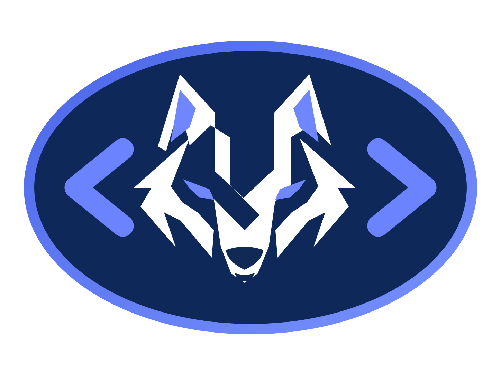

.ric everywhere
Source files use .ric, projects use project.ric, locks use ric.lock, and the CLI is ric.

A statically typed, native-oriented language with a straightforward syntax, compiler pipeline, interpreter, Linux x86-64 native backend, project tooling and editor integration.
function add(a: int, b: int): int {
return a + b
}
print("Hello from Ric")
print(add(10, 20))Source files use .ric, projects use project.ric, locks use ric.lock, and the CLI is ric.
Lexer, parser, static checking, NIR, optimizer, interpreter, native backend and LSP foundation live in one explicit toolchain.
The repository ships TextMate highlighting, language configuration and a Ric file-icon theme for VS Code-compatible editors.